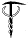

|
SEARCH & RESCUE LINKS

"So, if you cannot
understand that there
is something in man
which responds to the
challenge of this
mountain and goes out
to meet it, that the
struggle is the
struggle of life itself
upward and forever
upward, then you won't
see why we go."
- George Leigh Mallory
1922
|